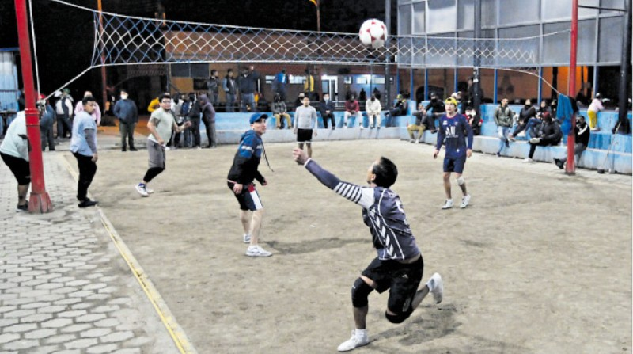
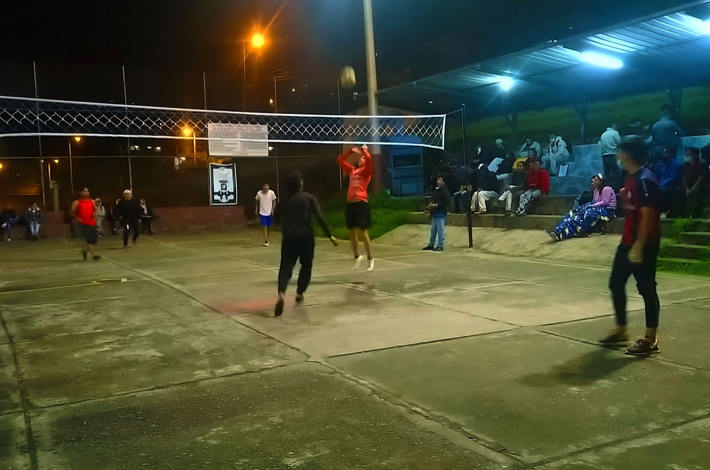

Galería de ecuavóley
En esta galería se presentan fotografías reales de ecuavóley que muestran el balón, los jugadores y las canchas donde se practica este deporte.


Video de ecuavóley
En el siguiente video se puede observar cómo se desarrolla un partido de ecuavóley.
Sonido de silbato
Escucha el sonido de un silbato deportivo utilizado durante los partidos.